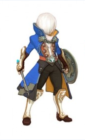

Search:
|  | Cleric The Cleric is a tough, armored fighter with the ability to both heal and buff friends. He does less damage than most other classes, but his support abilities more than make up for it, making the Cleric a welcome friend in any party. Character The goddess decrees that evil must be exterminated, and this the Cleric does without question. He does whatever is necessary to further the cause of righteousness. Through his every act of holy violence, he sheds the hypocrisy of his past and family—his untrue father, his cruel stepmother, and his heritage as the bastard son of a line of impoverished noblemen—for the Cleric believes that good can only be born out of bloodshed. Primary Attributes: |
| Sorceress The Sorceress specializes in medium-range attacks. While they can’t do as much damage as the Archer, their greatest strength is their ability to inflict various status ailments on enemies. They can freeze them, set them on fire, poison them, or do all sorts of other damage that can kill a lot of monsters over time. They can also equip a variety of off-hand items that allow them to cause different secondary effects. Character Nobody is smarter, sexier, or witchier than the Sorceress—her own words. She'll perform any spell, fight any monster, and retrieve any lost item, all for the right price. Once, she had the potential to be the greatest of her kind, but she rejected that destiny and decided her time was better spent gambling, but destiny is not so easily thwarted... Primary Attributes: |